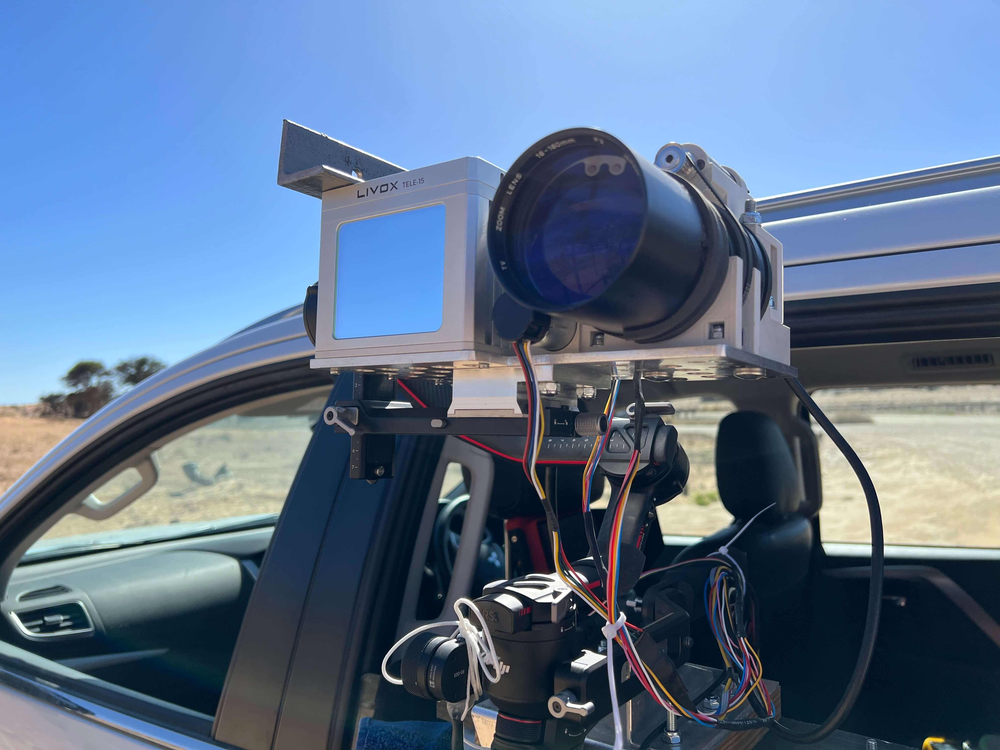
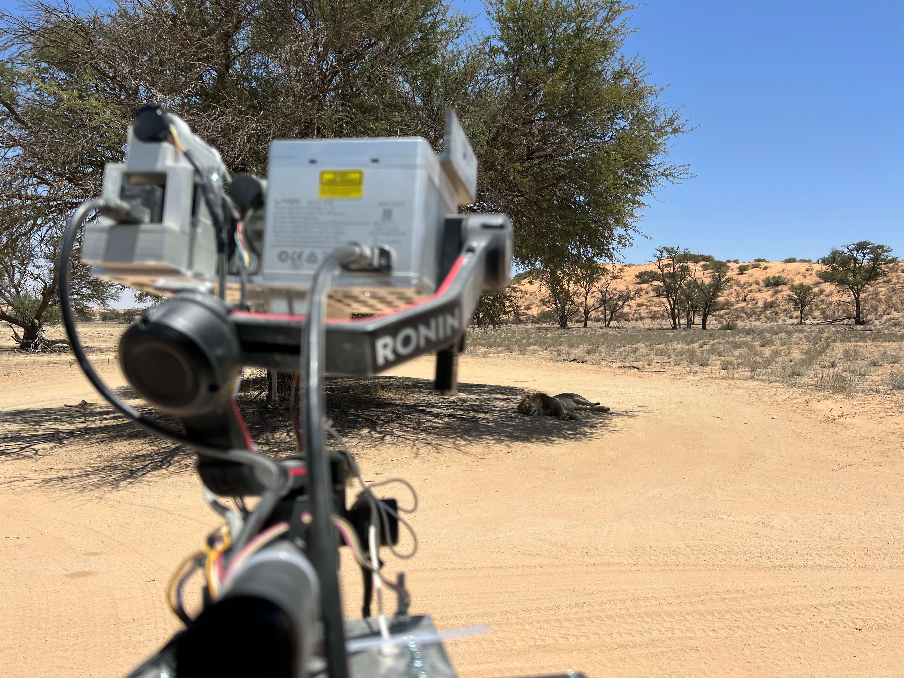

Field Trials



WildPose is a novel long-range motion capture system designed for free-ranging wildlife observation. It combines an electronically controllable zoom-lens camera with a solid-state LiDAR to capture both 2D videos and 3D point cloud data remotely. This enables researchers to observe high-fidelity animal morphometrics, behavior, and interactions in a non-intrusive manner. Field trials in Kgalagadi Transfrontier Park successfully demonstrated WildPose's ability to quantify morphological features of different species, precisely track the 3D movements of a springbok herd over time, and observe the respiratory patterns of a distant lion. By facilitating long-range 3D data collection, WildPose significantly advances ecological and biomechanical studies, offering new possibilities for conservation, animal welfare, and interdisciplinary research.
@article {Muramatsu2024.02.05.578861,
author={Muramatsu, Naoya and Shin, Sangyun and Deng, Qianyi and Markham, Andrew and Patel, Amir},
title={WildPose: A Long-Range 3D wildlife motion capture system},
year={2024},
doi={10.1101/2024.02.05.578861},
journal={bioRxiv},
}